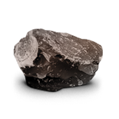
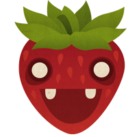
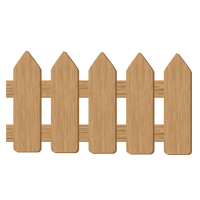
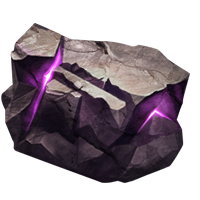
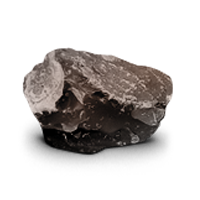
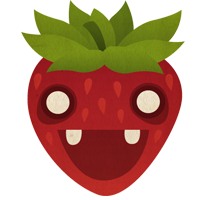
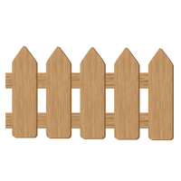
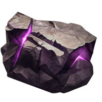

每个人，都有自己的梦想，而每个人的梦想与现实的距离，究竟有多长、有多远，是各不相同。但有一点是共同的。那就是，不甘于现实中的处境，不甘于生活中的无助，希望借助梦想，摆脱自己无奈的困境，幻想自己能够拥有美好而又前途光明的未来，不愿屈就在现实中迷惘和落寞，在梦想与现实的边缘，寻找心理平衡。
就像游戏中的小女孩一样，即使是穿梭在无边的沙漠中，依然不放弃希望。
相信大家曾今都梦想着心中的那份美好，虽然被现实磨平了棱角，但依然要像小女孩一样，永远不放弃希望。